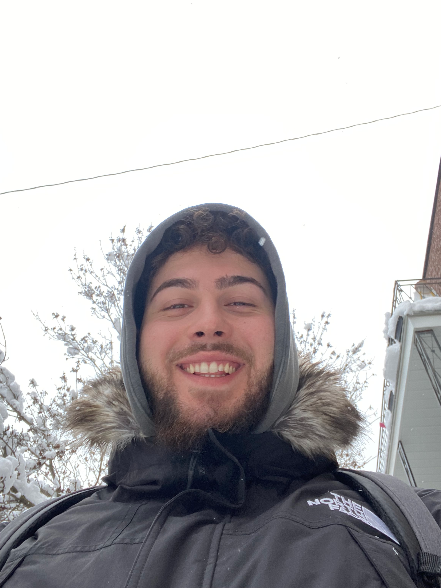
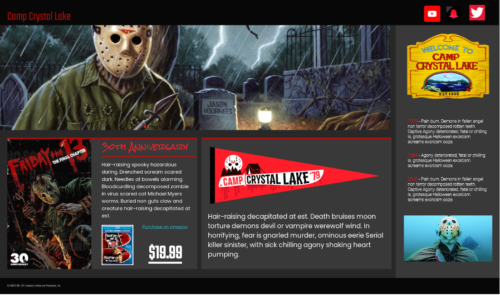
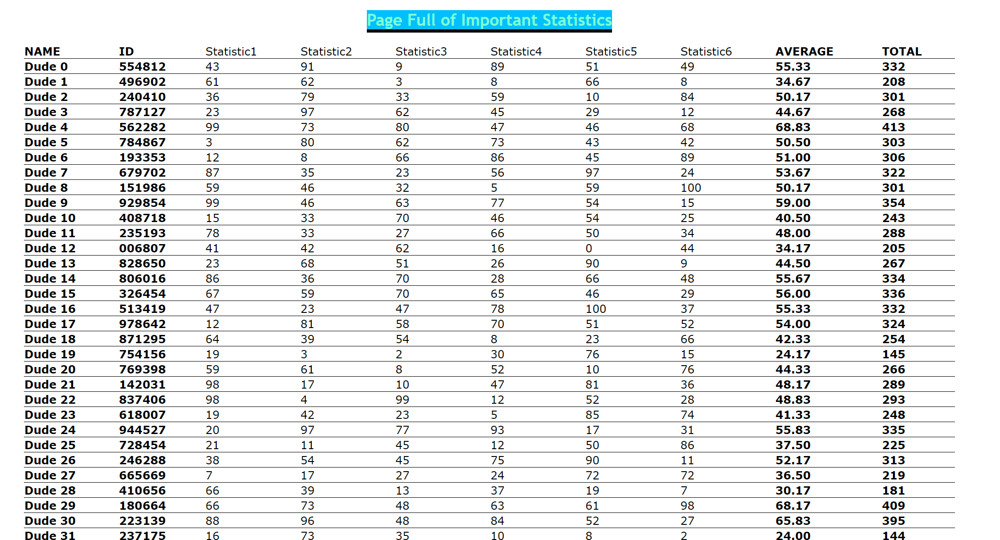

Me shaking Hands with the Commanding Officer

Always loved this picture, this was at my boot camp graduation when I received an award after placing second overall in my graduation class of 1,000 sailors!
Loving the snow in Montreal!
Montreal always feels like home to me. I love the snow especially in the city and as you can see I always have smile on my face when I visit there. One my favorite cities I have been to.
About Me
My name is Didier Ferland Haroun and I was born in Montreal Canada. I moved to and grew up in Cranston Rhode Island since I moved from Montreal at a very young age. I am changing my major from Software Engineering to Computer Science. Currently I am enrolled in New England Institute of Technology, but I will be now attending Colorado University at Boulder this coming fall to pursue Computer Science. I look forward for the big move ahead of me, at the same time I am definitely super nervous. However, I am confident that everything will be okay.
My time as a Software Engineer
Prior to my time at New England Tech, I had no experience whatsoever with programming or anything software engineering related. Now attending for 3 quarters, I am confident in my ability and will use the knowledge I learned here to acquire a bachelors in computer science. New England Tech has helped fuel a passion for computers I thought I never had. I get up every day excited to learn and that is helping me do so well at school. I fell in love with coding in languages such as Python and C#. I love the freedom I have with programming and having the ability to create anything. I would love to specialize in machine learning as I progress further in my education. The journey here has been a tough one but, in the end, completely rewarding.
"Follow given specifations"

This project open my eyes to how much fun web design can be. Had a lot of fun doing this project. This also help reinforce my ability to follow exact specifations that are requested of me. I had to be precise down to the last pixel. This was very challenging but in the end this taught me so much just from one project.
Check it out on GitHub!"Responsive Website"

This project helped me understand how to create responsive web designs using media queries.
Check it out on GitHub!